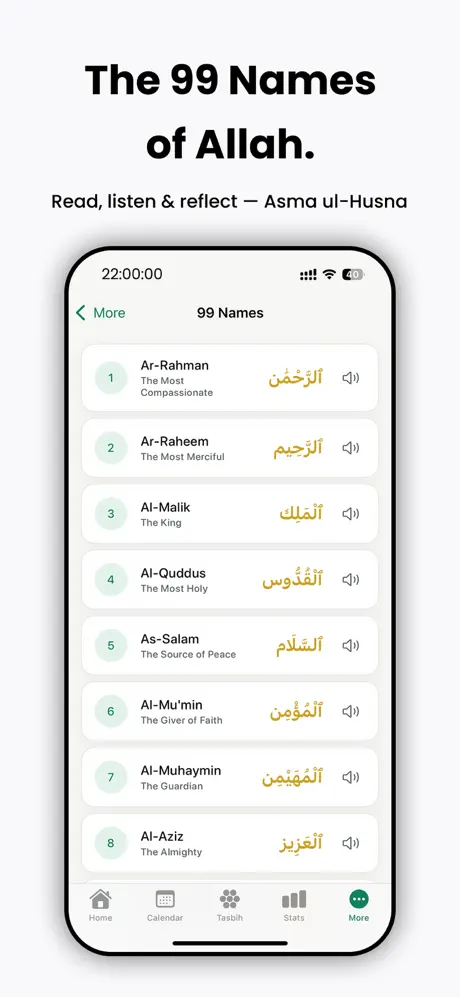
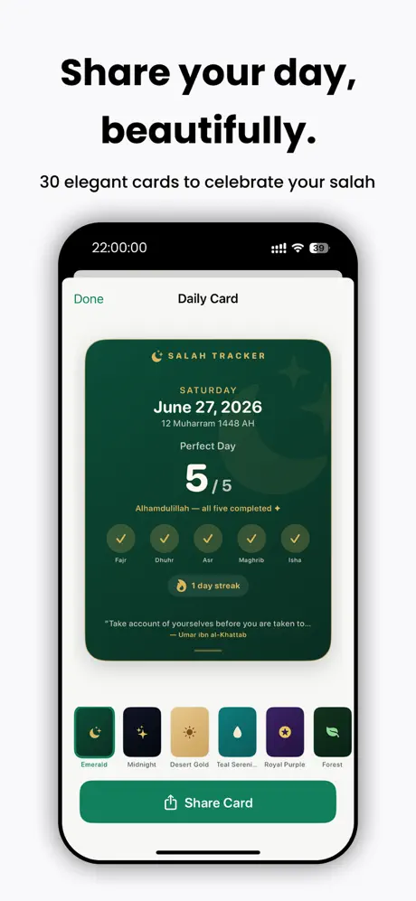
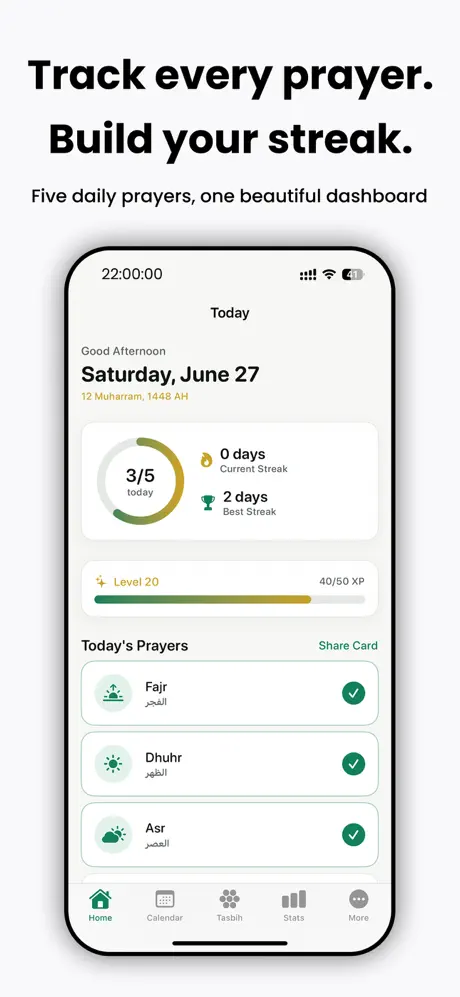
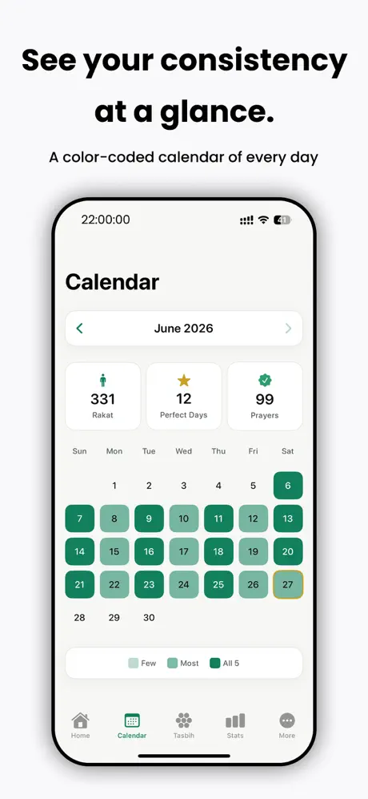
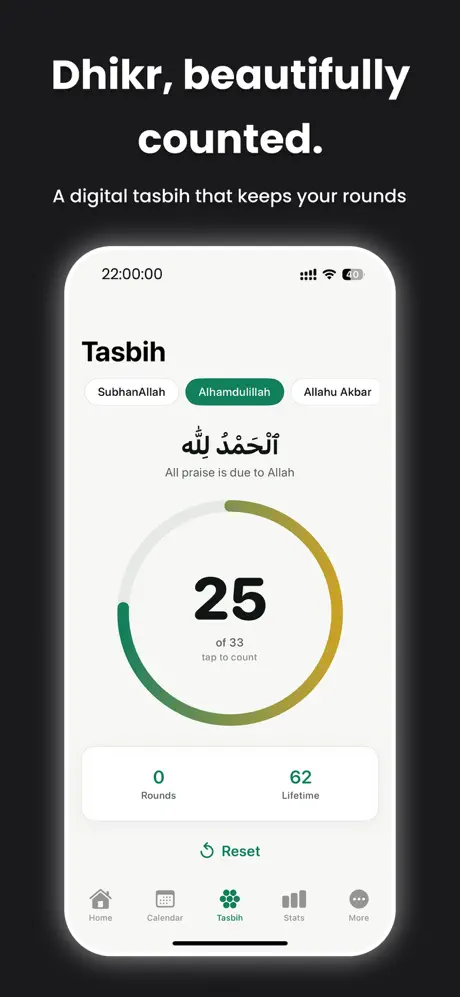

Pomodoro Focus Timer: OneTap
Productivity & Business · Lifestyle & Habits
Start a focus session with a single tap.
Prayer times, a real Fajr alarm and Qibla, offline.
Offline prayer times calculated from your location, a continuously ringing Fajr alarm, Qibla compass, prayer streaks, tasbih counter and a widget. Free and ad-free.





Screenshots from the official App Store listing.
Pray on Time (SalahTracker in the app) calculates times for Fajr, Dhuhr, Asr, Maghrib and Isha from your location, fully offline, with multiple calculation methods to match your region.
A continuously ringing Fajr alarm, rather than a quiet notification, and reminders before each prayer help you stay on time. Log each prayer with a tap to build streaks, earn badges and follow your consistency on a calendar.
It includes a Qibla compass, a digital tasbih with haptics, the 99 Names of Allah and a Home Screen widget, in six languages with full right-to-left support.
Inside the app and in parts of its listing, it is called SalahTracker.
Calculated from your location with multiple calculation methods.
A continuously ringing alarm, plus reminders before every prayer.
One-tap logging, streaks, XP, badges, goals and a calendar.
Find the direction of prayer.
A digital dhikr counter with haptics, and the 99 Names of Allah.
Prayer times on your Home Screen.
English, Indonesian, Arabic, Turkish, French and Malay in-app, with full RTL support.
Features as described on the App Store listing. Some require an in-app purchase.
The App Store listing shows no in-app purchases, and the description calls the app free and ad-free.
The description lists six in-app languages: English, Indonesian, Arabic, Turkish, French and Malay. The App Store's language field currently shows English only.
Productivity & Business · Lifestyle & Habits
Start a focus session with a single tap.
Productivity & Business · Lifestyle & Habits
Log spending in a tap and stay on budget.